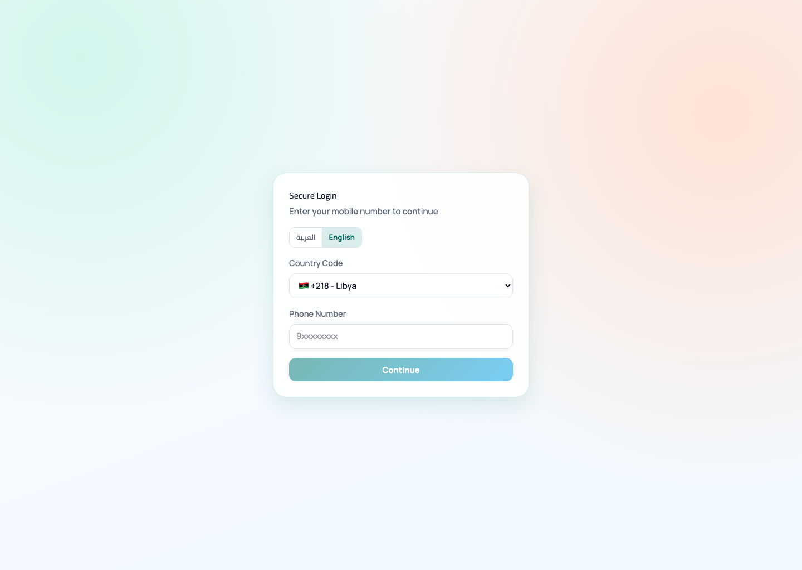
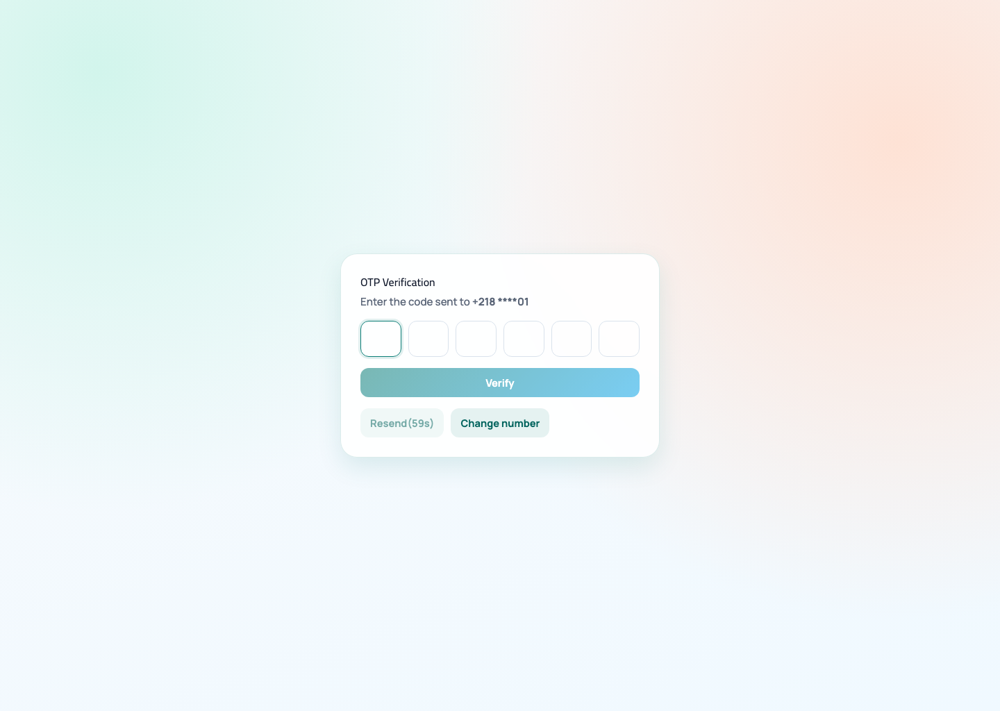
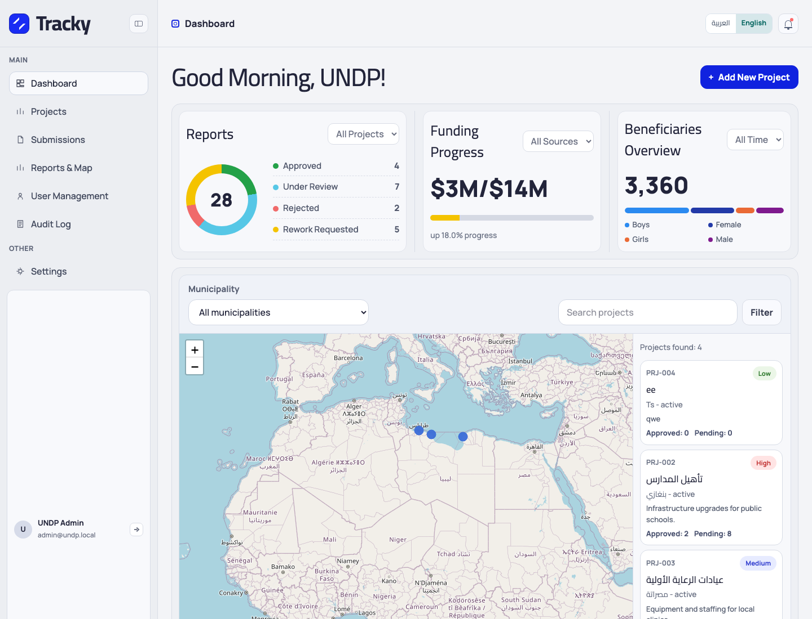
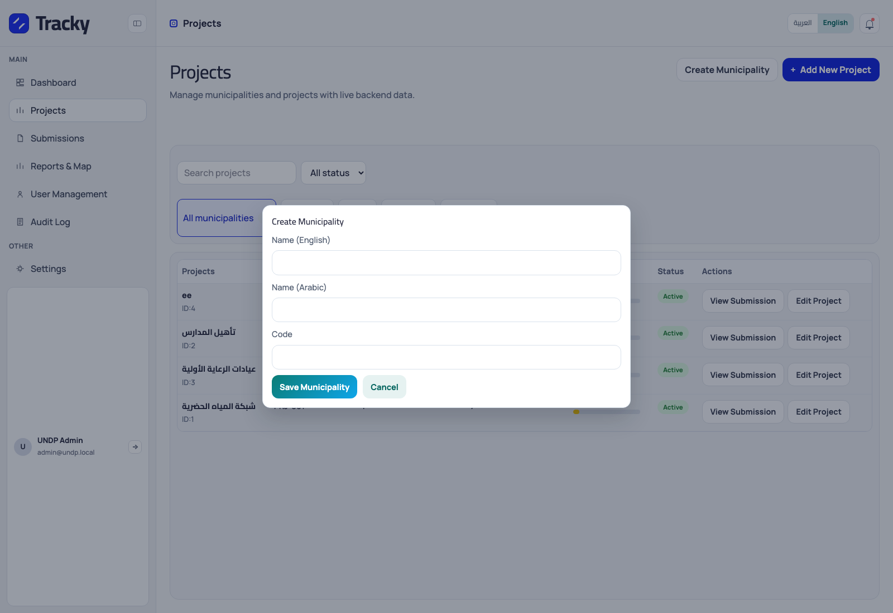
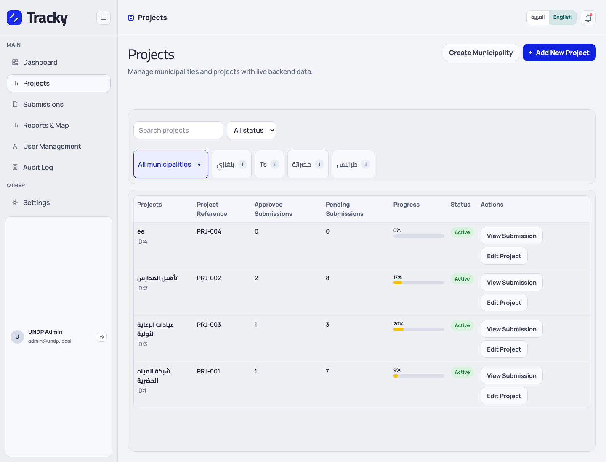
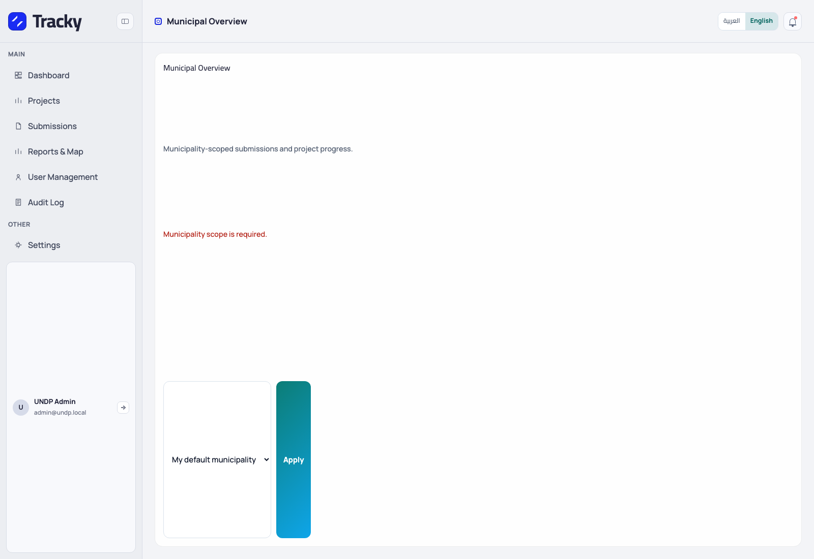
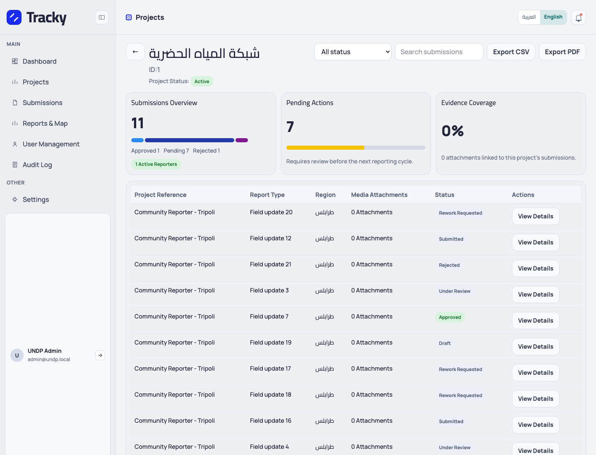
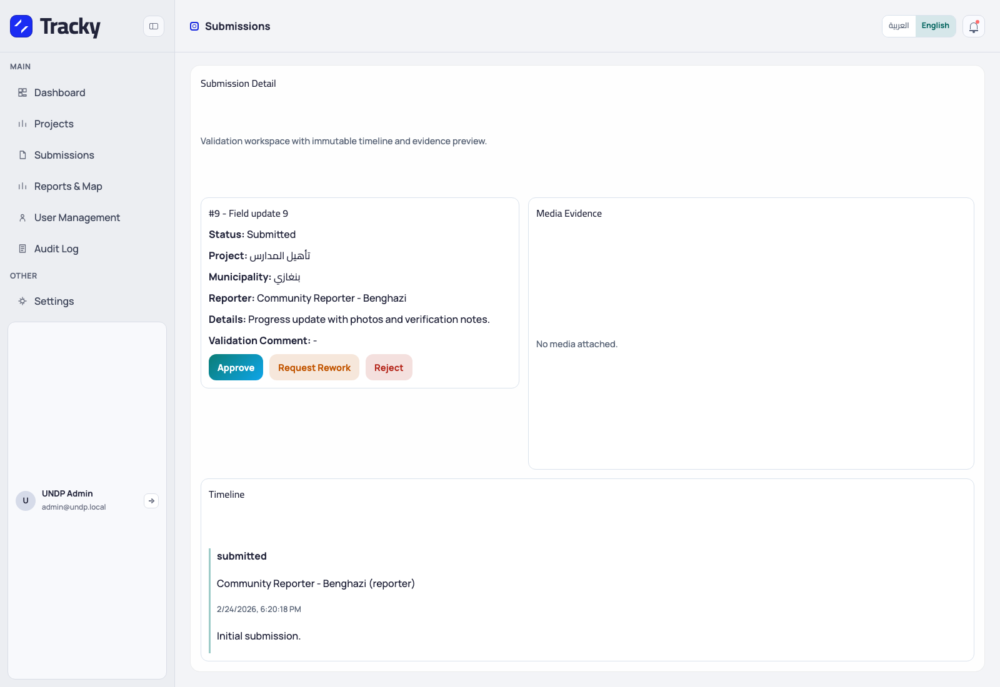
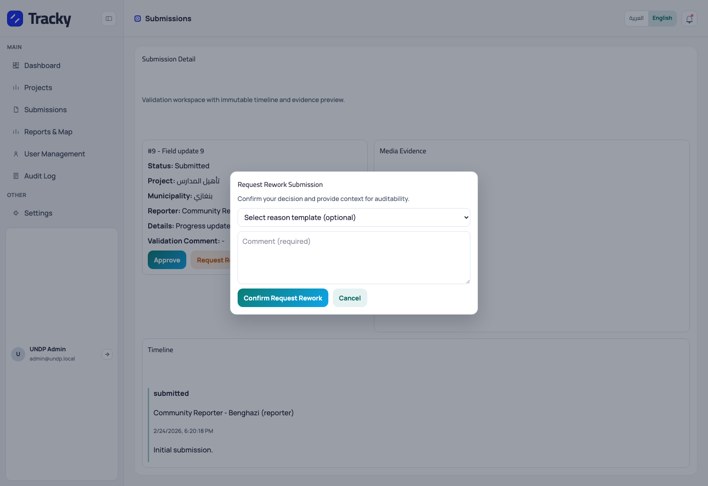

Platform: UNDP Monitoring / Validation Platform (Web Dashboard, APIs, and Mobile Integration Surface)
Generated from current codebase: 27 February 2026
This edition adds expanded CRUD walkthroughs, implementation notes, real screenshots captured from the running local application, and explicit notes wherever a capability is API-only or intentionally not exposed in the current web UI.
This guide covers the currently implemented web dashboard, validation screens, reporting screens, user administration, settings, and the API surface used by the mobile application. It is written against the live codebase and the current seeded dataset.
The cover page works as a clickable table of contents. In the HTML guide, each link jumps directly to the relevant section. In the Word guide, the same numbering and internal bookmarks are preserved.
All walkthroughs below reflect the current implementation. Where a full CRUD action is not exposed in the web UI, the guide states that explicitly instead of implying functionality that does not exist.
Authentication is phone-number based and uses OTP verification. The same token is reused by the web app and can be used in Postman/mobile during development.
5.1 Login Page (/login)
Purpose: Start the OTP request flow.
Main buttons and controls
Country code selector
Phone number field
Continue
Operational steps
Open the login page.
Select the country code if needed. The default local setup uses +218.
Enter the phone number and click Continue.
If validation passes, the app navigates to the OTP page.
If validation fails, the field shows an inline error and the request is blocked.

Login page with country code selector and phone number fieldBack to Contents
5.2 OTP Verification (/otp)
Purpose: Complete the login and create the authenticated session.
Main buttons and controls
OTP input fields
Verify
Resend
Change Number
Operational steps
Enter the 6-digit OTP from the configured SMS / log provider.
Click Verify.
On success, the app stores the token and user object locally, then redirects to the dashboard.
Use Resend if the code expires or is not received.
Use Change Number to return to the login page and restart the flow.

OTP verification screen with six input slots and verification controlsBack to Contents
5.3 Logout and Session Control
Purpose: Terminate the session safely from the sidebar footer card.
Operational steps
Locate the logged-in user card at the bottom of the sidebar.
Click the logout action on the right side of the card.
The stored token is removed and the app returns to the login page.

Authenticated layout showing the sidebar user card used for logoutBack to Contents
Municipalities are currently managed from the Projects module and then reused throughout filters, tabs, and dashboards.
7.1 Create a Municipality
Purpose: Add a municipality record used by projects and scoped dashboards.
Operational steps
Open Projects.
Click the Create Municipality button in the page header.
Enter English name, Arabic name, and the municipality code.
Click Save Municipality to persist the new record.
The municipality becomes available in project forms, tabs, and dashboard selectors after reload.

Create Municipality modal in the Projects moduleBack to Contents
7.2 Read and Use Municipalities
Municipality update exists at the API layer, but the current web UI does not expose a dedicated municipality edit screen. Hard delete is not implemented.
Purpose: Use municipality records to segment data.
Operational steps
In Projects, municipality tabs split the project list by municipality.
In Dashboard and Reports & Map, municipality selectors scope the visible markers and project lists.
In Settings and User Management, municipality assignment determines what some roles can review.

Projects page showing municipality tabs

Municipal overview page used to inspect scoped summary dataBack to Contents
Submission records are reviewed in the web UI. Submission creation itself belongs to the mobile or direct API flow.
9.1 Project Submission List
Purpose: Inspect submission counts and row-level records for one project.
Main buttons and controls
Back
Status filter
Search submissions
Export CSV
Export PDF
View Details
Operational steps
From Projects, click View Submission for the target project.
Review the KPI strip for total submissions, pending actions, and evidence coverage.
Use the table to inspect reporter name, report type, region, attachments, and status.
Use export buttons to generate the current view in CSV or PDF.

Project-level submissions page with KPI cards and row tableBack to Contents
9.2 Open Submission Detail
Purpose: Read the complete submission, media assets, and timeline.
Operational steps
Click View Details on any submission row.
Review the header details: status, project, municipality, reporter, description, and validation comment.
Inspect media evidence and click any asset to load a preview.
Review the immutable timeline at the bottom of the page.

Submission detail page with evidence panel and timelineBack to Contents
9.3 Approve, Rework, and Reject
Purpose: Process a submission through the validation workflow.
Operational steps
Open a submission detail page.
Choose Approve, Request Rework, or Reject.
For rework and rejection, provide a comment. Use a reason template where available.
Click the confirm button in the action modal.
The status updates and the timeline is extended with the new event.

Submission action modal used for rework / rejection / approval confirmationBack to Contents
9.4 Submission Creation Path
This separation is intentional: the web app is currently focused on review, oversight, administration, and reporting, while field submission entry belongs to mobile/API flows.
Purpose: Clarify where new submissions are created.
Operational steps
The current admin web UI does not expose a Create Submission form.
New submissions are expected to be created by the mobile application or through direct API integration.
Use the Postman collection in this repository as the reference for the Flutter/mobile integration team.
The mobile application should use the Postman collection in docs/postman as the starting contract. The current web UI already proves the OTP auth, project lookup, submission review, media, and settings endpoints.
Recommended first mobile flow: request OTP, verify OTP, call /auth/me, load municipalities, load scoped projects, create submissions via the API, upload media via presign/complete, then poll the user submission list for status changes.